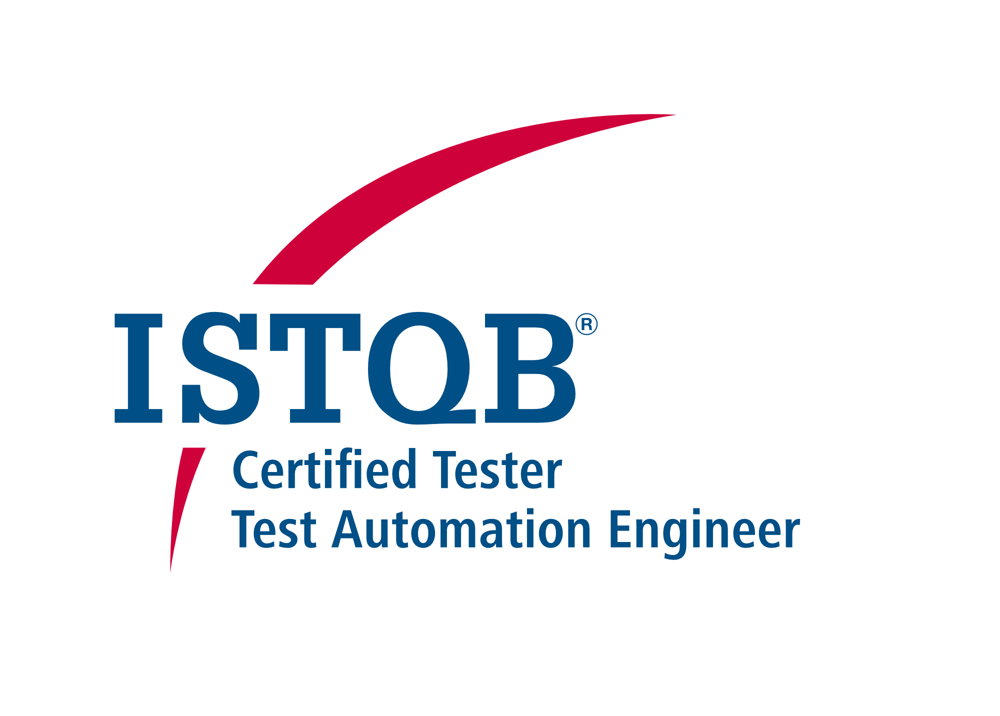

×
ISTQB - Certified Tester Test Automation Engineer
The ISTQB® Test Automation Engineer (CT-TAE)
certification focuses on the design, development,
and maintenance of test automation solutions. It
also covers the concepts, methods, tools, and
processes for automating dynamic functional tests,
and the relationship of those tests to test management,
configuration management, defect management, software
development processes, and quality assurance. Methods
described are generally applicable across a variety of
software life cycle approaches, types of software
systems, and test types.
